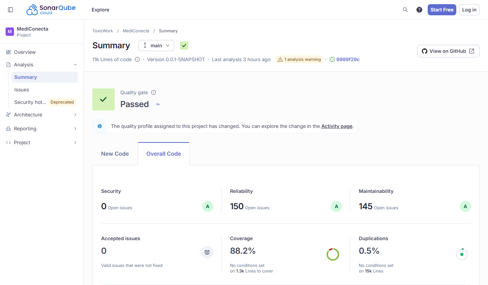
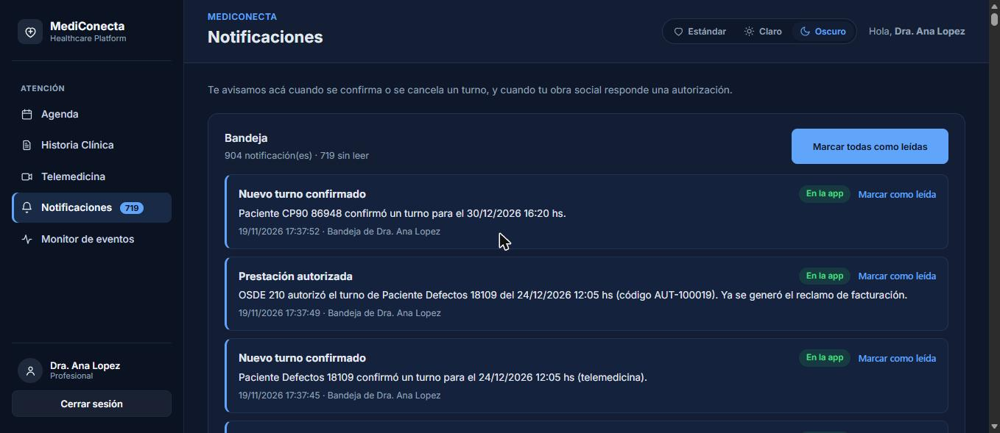

Este documento reúne la documentación de pruebas de MediConecta según la estructura de ISO/IEC/IEEE 29119-3, tal como la pide la cátedra para la prueba del sistema. Cada resultado sale de una ejecución real del pipeline de integración continua (corrida 44619411275, 19/11/2026, rama decorator-y-cifrado) y se puede repetir con los scripts del repositorio. Lo que no se pudo verificar se dice como tal.
Estado del código: la corrida es de la rama decorator-y-cifrado, que reúne lo hecho el 19/11 a la tarde: el Decorator PacienteEnmascarado y el cifrado de columnas con AES-GCM (las dos promesas del diseño que faltaban), los arreglos de D-08 y D-44 a D-46, las pruebas de integración con Arquillian, el contrato del WSDL y las pruebas manuales CP-90 a CP-92. main ya tiene todo lo anterior (corrida 44604558217, en verde); esta rama espera la aprobación del equipo para integrarse. El tag v1.0-testing se crea en main al cierre, y este documento se regenera con la corrida del tag.
| Qué | Dónde |
|---|---|
| Repositorio | https://github.com/ToxicWork/MediConecta |
| Pipeline (corrida de este informe) | https://github.com/ToxicWork/MediConecta/actions/runs/44619411275 |
| Tablero (casos y defectos) | https://trello.com/b/7c84ZN3J/mediconecta-grupo-04 |
| SonarCloud | https://sonarcloud.io/project/overview?id=ToxicWork_MediConecta |
| Contrato de la API (OpenAPI) | https://github.com/ToxicWork/MediConecta/blob/main/docs/api/openapi.json |
| Reportes (artefactos de la corrida) | https://github.com/ToxicWork/MediConecta/actions/runs/44619411275 |
Alcance: las diez historias de usuario comprometidas (HU-01 a HU-10) con sus criterios; la telemedicina y la administración (pagos, turnos, usuarios, desbloqueo); las integraciones con el legado SOAP de la obra social, la pasarela de pagos y el proveedor de videoconsultas (REST), y la mensajería (tópico de turnos y cola de autorizaciones); la API REST versionada; y los criterios de seguridad SEC del diseño.
Fuera de alcance: Mercado Pago real (la pasarela es un simulador), una aplicación móvil (no hay), la funcionalidad de IA dentro del sistema (MediConecta no la tiene; consulta pendiente con la cátedra) y el arranque con un único comando con contenedores (G1, eximido por la cátedra el 18/11).
| Nivel | Herramientas | Qué cubre | Estado |
|---|---|---|---|
| Unitario | JUnit 5 y Mockito; JaCoCo; PIT (mutación del dominio) | Reglas del dominio y de los servicios EJB, sin contenedor | 317 pruebas en 50 clases |
| Integración | Arquillian (contenedor remoto) dentro del WildFly del pipeline, con su PostgreSQL y su broker Artemis; además, las suites de punta a punta | Repositorios (JPA sobre PostgreSQL, cifrado de columnas, idempotencia) y consumidores de mensajes (los MDB de la aplicación con el evento real), SOAP y REST externos | RepositoriosIT y ConsumidoresDeMensajesIT (src/it/java, mvn -P integracion verify), sin mocks |
| Contrato | prueba_contrato_api.py contra el OpenAPI; ApiRestAssuredIT (REST Assured): éxito y error por endpoint; prueba_contrato_wsdl.py contra el WSDL del cliente | Cada respuesta documentada de la API REST; operaciones, tipos y enumeraciones del servicio SOAP | 29 de 30 respuestas; el WSDL publicado por el legado coincide campo por campo con el contrato |
| E2E | Playwright (Python) con Chrome, en el pipeline | Flujos completos de los tres roles, defectos y seguridad | 15 suites |
| No funcional | k6 (carga), OWASP ZAP (seguridad), axe-core (accesibilidad), prueba responsive, gitleaks y Trivy | Rendimiento, vulnerabilidades, WCAG 2.2 AA, diseño a 360/768/1280 px, secretos y dependencias | Todas en el pipeline |
| Manual | Exploratoria guiada; tarea del manual de usuario | Lo que el docente prueba sin guion | Charters en la sección 3 |
| Entorno | Composición |
|---|---|
| Pipeline (evidencia de este informe) | GitHub Actions, ubuntu-24.04: WildFly 41.0.0 (zip de Maven Central con checksum), PostgreSQL de la imagen, Google Chrome, Java 25, Python 3.12. Usuarios de demo creados por la propia aplicación; contraseñas al azar por corrida |
| Desarrollo (Windows y macOS) | WildFly 41 con standalone-full, base en Supabase (PostgreSQL), sistemas externos simulados (externos.war) |
| Demostración en clase | El entorno de desarrollo de un integrante con los datos de demo (SETUP.md) |
Los usuarios de demo (Dra. Ana Lopez, profesional; Juan Perez, paciente con OSDE 210; Carla Admin, administrativa) los crea pruebas/sembrar_usuarios_demo.py a través de la propia aplicación. Cada suite crea sus propios pacientes con emails al azar y usa horarios relativos a la fecha de la corrida, de 5 en 5 minutos y en rangos de días distintos para no chocar entre sí. La consola de los sistemas externos (/externos) pone cada sistema en línea, caído o lento y decide la respuesta de las autorizaciones. Las tarjetas son de prueba del simulador.
| Id | Riesgo | Probabilidad | Impacto | Cubierto por |
|---|---|---|---|---|
| R-01 | Dos operaciones simultáneas sobre un turno (doble reserva, doble cancelación) | Alta | Alto | CP-05, CP-20, CP-46, CP-92 (D-45) |
| R-02 | Pérdida de mensajes si el broker o un suscriptor se cae | Media | Alto | CP-14, CP-35, CP-23 |
| R-03 | El legado de la obra social caído, lento o con Fault | Alta | Alto | CP-09, CP-10, CP-13, CP-72 |
| R-04 | La pasarela falla durante el cobro o el reintegro | Media | Alto | CP-07, CP-11, CP-23, CP-93 (D-06 y D-41 resueltos en la rama) |
| R-05 | Acceso a datos clínicos ajenos (BOLA) o de otro rol (BFLA) | Media | Alto | CP-18, CP-27, CP-36, CP-43, CP-64 |
| R-06 | Fuerza bruta, inyección o token robado | Media | Alto | CP-47, CP-49, CP-55, CP-56, CP-58 |
| R-07 | Datos personales o de salud en logs y mensajes | Baja | Alto | CP-54, CP-67 |
| R-08 | Inyección de eventos falsos en el broker | Baja | Alto | CP-59 |
| R-09 | Pantallas lentas con volumen real (N+1) | Media | Medio | CP-45, CP-79 |
| R-10 | Sesión o conversación vencida que rompe la pantalla | Media | Medio | CP-04, CP-62 (D-43), CP-92 (D-46) |
| R-11 | Pruebas inestables que esconden defectos | Media | Medio | CP-83 y tres corridas idénticas |
| R-12 | Base de Supabase pausada o bloqueada por la red el día de la demo | Media | Alto | Lista de control previa (D-11); el pipeline no depende de Supabase |
Rol del QA: el equipo designará al responsable antes de la entrega; hasta entonces los casos y defectos del tablero figuran sin responsable asignado. Cualquier integrante puede explicar cualquier prueba.
Cada historia tiene al menos tres criterios en formato Dado / Cuando / Entonces (camino feliz, alternativo y de error) y las que integran sistemas externos suman uno ante su falla. La prioridad es MoSCoW: Must las del flujo principal (reservar, confirmar, cancelar y publicar), Should las que agregan valor sin bloquearlo y Could el Monitor de eventos. Won't (en esta entrega): Mercado Pago real y la aplicación móvil.
| Historia | Prioridad | Historia y criterios |
|---|---|---|
| HU-01 Reservar un horario con unos minutos para confirmarlo | Must Sin reserva no hay turno: es el primer paso del flujo principal. | Como paciente, quiero reservar un horario y tener unos minutos para confirmarlo, para que nadie me lo saque mientras decido.
|
| HU-02 Confirmar el turno y ver que quedó registrado | Must Cierra el flujo principal: cobertura, pago y confirmación. | Como paciente, quiero confirmar mi turno y ver que quedó registrado, para tener la certeza de que me van a atender.
|
| HU-03 Cancelar un turno | Must Libera el horario y dispara el reintegro: dinero y agenda. | Como paciente, quiero cancelar un turno al que no voy a poder ir, para liberar el horario.
|
| HU-04 Ver sólo horarios que todavía se pueden usar | Should Evita frustración; la publicación ya impide horarios pasados. | Como paciente, quiero ver solo horarios que todavía puedo usar, para no perder tiempo con turnos vencidos.
|
| HU-05 Consultar mi historia clínica | Should Valor para el paciente; no bloquea el flujo de turnos. | Como paciente, quiero consultar mi historia clínica, para tener a mano mis diagnósticos y recetas.
|
| HU-06 Publicar horarios | Must Sin horarios publicados no hay nada que reservar. | Como profesional, quiero publicar los horarios en que atiendo, para que los pacientes puedan reservarlos.
|
| HU-07 Enterarme cuando confirman o cancelan | Should Mejora la operación diaria; el turno existe aunque el aviso demore. | Como profesional, quiero enterarme cuando un paciente confirma o cancela, sin tener que recargar la página.
|
| HU-08 Registrar diagnósticos y recetas | Should Funcionalidad clínica; restringida por la regla del turno confirmado. | Como profesional, quiero registrar diagnósticos y recetas de mis pacientes, para llevar su historia clínica.
|
| HU-09 Ver si el sistema procesó los avisos (Monitor de eventos) | Could Da transparencia sobre la mensajería; el resto funciona sin él. | Como usuario, quiero ver si el sistema ya procesó los avisos de mis turnos, para saber que no se perdió ninguno.
|
| HU-10 Que el registro avise si falta un dato | Should Calidad de datos; el registro en sí ya funciona. | Como usuario, quiero que el registro me avise si me falta un dato, para no crear una cuenta incompleta.
|
HU → criterio → caso → test automatizado → resultado → evidencia → defecto. Ningún criterio queda sin caso. Resultado del pipeline: 48 de 48 criterios pasados (100 %), 0 pasados en parte (falta su verificación manual), 0 manuales y 0 fallados; criterios Must fallados: ninguno.
| HU | Criterio | Casos | Test automatizado | Resultado | Evidencia | Defectos |
|---|---|---|---|---|---|---|
| HU-01 | CA-01.1 | CP-03 | pruebas/prueba_hold_vence.py | Pasó | Corrida 44619411275 | D-33 |
| HU-01 | CA-01.2 | CP-03, CP-63 | LiberadorDeHoldsTest, TareasProgramadasYNotificacionesTest; pruebas/prueba_hold_vence.py | Pasó | Corrida 44619411275 | D-33 |
| HU-01 | CA-01.3 | CP-05 | pruebas/prueba_defectos.py | Pasó | Corrida 44619411275 | D-36 |
| HU-01 | CA-01.4 | CP-04, CP-62 | ConversacionDeTurnosTest; pruebas/prueba_hold_vence.py | Pasó | Corrida 44619411275 | D-43 |
| HU-02 | CA-02.1 | CP-01, CP-06 | pruebas/prueba_e2e.py; pruebas/prueba_entrega4.py | Pasó | Corrida 44619411275 | - |
| HU-02 | CA-02.2 | CP-08 | pruebas/prueba_entrega4.py | Pasó | Corrida 44619411275 | - |
| HU-02 | CA-02.3 | CP-07 | pruebas/prueba_entrega4.py | Pasó | Corrida 44619411275 | - |
| HU-02 | CA-02.4 | CP-12 | pruebas/prueba_defectos.py | Pasó | Corrida 44619411275 | D-19, D-29, D-30 |
| HU-02 | CA-02.5 | CP-09, CP-13 | pruebas/prueba_defectos.py; pruebas/prueba_entrega4.py | Pasó | Corrida 44619411275 | D-20 |
| HU-02 | CA-02.6 | CP-10 | pruebas/prueba_entrega4.py | Pasó | Corrida 44619411275 | - |
| HU-02 | CA-02.7 | CP-11 | pruebas/prueba_entrega4.py | Pasó | Corrida 44619411275 | D-42 |
| HU-02 | CA-02.8 | CP-14 | pruebas/prueba_broker.py | Pasó | Corrida 44619411275 | - |
| HU-03 | CA-03.1 | CP-01, CP-15 | pruebas/prueba_cancelacion.py; pruebas/prueba_e2e.py | Pasó | Corrida 44619411275 | D-21 |
| HU-03 | CA-03.2 | CP-16, CP-17 | pruebas/prueba_cancelacion.py | Pasó | Corrida 44619411275 | D-07, D-22 |
| HU-03 | CA-03.3 | CP-18, CP-66 | TurnoEstadoTest, MapeadorDeExcepcionesTest; pruebas/prueba_cancelacion.py | Pasó | Corrida 44619411275 | - |
| HU-03 | CA-03.4 | CP-19 | pruebas/prueba_cancelacion.py | Pasó | Corrida 44619411275 | D-13, D-43 |
| HU-03 | CA-03.5 | CP-18 | pruebas/prueba_cancelacion.py | Pasó | Corrida 44619411275 | - |
| HU-03 | CA-03.6 | CP-23 | pruebas/prueba_seguridad.py | Pasó | Corrida 44619411275 | D-06 |
| HU-03 | CA-03.7 | CP-20, CP-46 | pruebas/prueba_cancelacion.py; pruebas/prueba_defectos.py | Pasó | Corrida 44619411275 | D-36 |
| HU-03 | CA-03.8 | CP-22 | pruebas/prueba_cancelacion.py | Pasó | Corrida 44619411275 | - |
| HU-03 | CA-03.9 | CP-21 | pruebas/prueba_cancelacion.py | Pasó | Corrida 44619411275 | - |
| HU-04 | CA-04.1 | CP-24 | pruebas/prueba_entrega4.py | Pasó | Corrida 44619411275 | - |
| HU-04 | CA-04.2 | CP-63 | LiberadorDeHoldsTest, TareasProgramadasYNotificacionesTest | Pasó | Corrida 44619411275 | - |
| HU-04 | CA-04.3 | CP-61 | ServicioDeTurnosBeanTest | Pasó | Corrida 44619411275 | D-23, D-39 |
| HU-04 | CA-04.4 | CP-19 | pruebas/prueba_cancelacion.py | Pasó | Corrida 44619411275 | D-13, D-43 |
| HU-05 | CA-05.1 | CP-01, CP-26 | pruebas/prueba_e2e.py; pruebas/prueba_seguridad.py | Pasó | Corrida 44619411275 | D-12 |
| HU-05 | CA-05.2 | CP-28 | pruebas/prueba_entrega4.py y prueba_defectos.py | Pasó | Corrida 44619411275 | D-32 |
| HU-05 | CA-05.3 | CP-64 | ServicioDeHistoriaClinicaBeanTest, HistoriaConTurnoConfirmadoTest | Pasó | Corrida 44619411275 | - |
| HU-05 | CA-05.4 | CP-56 | pruebas/prueba_inyeccion.py | Pasó | Corrida 44619411275 | - |
| HU-06 | CA-06.1 | CP-01, CP-03 | pruebas/prueba_e2e.py; pruebas/prueba_hold_vence.py | Pasó | Corrida 44619411275 | D-33 |
| HU-06 | CA-06.2 | CP-30 | pruebas/prueba_defectos.py | Pasó | Corrida 44619411275 | D-23 |
| HU-06 | CA-06.3 | CP-31, CP-61 | ServicioDeTurnosBeanTest; pruebas/prueba_defectos.py | Pasó | Corrida 44619411275 | D-23, D-39 |
| HU-06 | CA-06.4 | CP-43 | pruebas/prueba_entrega4.py | Pasó | Corrida 44619411275 | - |
| HU-07 | CA-07.1 | CP-32, CP-90 | Manual; pruebas/prueba_e2e.py | Pasó | Corrida 44619411275 | - |
| HU-07 | CA-07.2 | CP-33 | pruebas/prueba_defectos.py | Pasó | Corrida 44619411275 | D-16 |
| HU-07 | CA-07.3 | CP-35 | pruebas/prueba_monitor.py | Pasó | Corrida 44619411275 | - |
| HU-07 | CA-07.4 | CP-67 | EventoSinDatosClinicosTest, EventoTurnoTest | Pasó | Corrida 44619411275 | - |
| HU-08 | CA-08.1 | CP-26 | pruebas/prueba_seguridad.py | Pasó | Corrida 44619411275 | D-12 |
| HU-08 | CA-08.2 | CP-29 | pruebas/prueba_defectos.py | Pasó | Corrida 44619411275 | D-15 |
| HU-08 | CA-08.3 | CP-27, CP-64 | ServicioDeHistoriaClinicaBeanTest, HistoriaConTurnoConfirmadoTest; pruebas/prueba_seguridad.py | Pasó | Corrida 44619411275 | - |
| HU-09 | CA-09.1 | CP-34 | pruebas/prueba_monitor.py | Pasó | Corrida 44619411275 | D-01 |
| HU-09 | CA-09.2 | CP-35 | pruebas/prueba_monitor.py | Pasó | Corrida 44619411275 | - |
| HU-09 | CA-09.3 | CP-36 | pruebas/prueba_monitor.py | Pasó | Corrida 44619411275 | - |
| HU-09 | CA-09.4 | CP-37 | pruebas/prueba_monitor.py | Pasó | Corrida 44619411275 | - |
| HU-10 | CA-10.1 | CP-38 | pruebas/prueba_entrega4.py | Pasó | Corrida 44619411275 | - |
| HU-10 | CA-10.2 | CP-39 | pruebas/prueba_defectos.py | Pasó | Corrida 44619411275 | D-12 |
| HU-10 | CA-10.3 | CP-39, CP-65 | ServicioDeUsuariosBeanTest, PoliticaDeContrasenasTest, UsuarioFactoryTest, ParametrosDeHashTest; pruebas/prueba_defectos.py | Pasó | Corrida 44619411275 | D-12 |
| HU-10 | CA-10.4 | CP-56 | pruebas/prueba_inyeccion.py | Pasó | Corrida 44619411275 | - |
93 casos: 25 positivos, 51 negativos y 17 de borde. Los negativos y de borde son el 73 % (mínimo pedido: 40 %). 90 están automatizados y corren en el pipeline; 3 son manuales. Cada caso agrupa las verificaciones de un escenario de la suite indicada; los identificadores son estables y se usan en el tablero.
| Id | Caso y HU | Precondición | Datos | Pasos | Resultado esperado | Tipo, prioridad y nivel | Automatizado |
|---|---|---|---|---|---|---|---|
| CP-01 | Flujo principal de punta a punta HU-01, HU-02, HU-03, HU-05, HU-06, HU-07 | Usuarios de demo (sembrar_usuarios_demo.py) y sistemas externos en línea | Paciente nuevo; horario al azar a 26-31 días | Publicar, reservar, confirmar, cancelar y abrir la historia clínica | Hold visible; «Mis turnos» se actualiza en la misma respuesta al confirmar y al cancelar; la profesional recibe los dos avisos; el paciente ve su historia sólo para leer | Positivo Alta E2E | Sí: pruebas/prueba_e2e.py |
| CP-02 | Login y páginas protegidas Seguridad | Usuarios de demo (sembrar_usuarios_demo.py) y sistemas externos en línea | Contraseña incorrecta; URL de la Agenda sin sesión | Ingresar con contraseña incorrecta; abrir la Agenda sin sesión | El login se rechaza; la Agenda redirige al login (SEC-W03) | Negativo Alta E2E | Sí: pruebas/prueba_e2e.py |
| CP-03 | El turno en espera vence solo a los 5 minutos HU-01, HU-06 | Usuarios de demo (sembrar_usuarios_demo.py) y sistemas externos en línea | Horario a 30 días | Publicar; reservar sin confirmar; consultar la API a los 4 minutos y cada 15 s después | A los 4 minutos sigue retenido; antes de los 7,5 minutos se vuelve a ofrecer; el @PreDestroy no falla (D-33) | Borde Alta E2E | Sí: pruebas/prueba_hold_vence.py |
| CP-04 | La Agenda sigue funcionando con la conversación vencida HU-01 | Paciente con la Agenda quieta más de 5 minutos | El mismo horario liberado | Volver a la Agenda; buscar; reservar | La Agenda abre sin error y el horario se reserva otra vez (D-43) | Borde Alta E2E | Sí: pruebas/prueba_hold_vence.py |
| CP-05 | Dos pacientes reservan el mismo horario a la vez HU-01 | Usuarios de demo (sembrar_usuarios_demo.py) y sistemas externos en línea | Dos sesiones de paciente | Reservar el mismo horario en paralelo | Uno se lo queda; al otro se le avisa que ya no está disponible; ninguno ve un error | Negativo Alta E2E | Sí: pruebas/prueba_defectos.py |
| CP-06 | Confirmación con cobertura de OSDE y tarjeta aprobada HU-02 | Usuarios de demo (sembrar_usuarios_demo.py) y sistemas externos en línea; Juan Perez con OSDE 210 | Tarjeta 4111 1111 1111 1111 | Reservar; cotizar; pagar el copago; confirmar | La cotización consulta la cobertura por SOAP (copago del 30 %); turno confirmado y copago cobrado | Positivo Alta E2E | Sí: pruebas/prueba_entrega4.py |
| CP-07 | Tarjeta rechazada por la pasarela HU-02 | Usuarios de demo (sembrar_usuarios_demo.py) y sistemas externos en línea; pasarela configurada para rechazar | Tarjeta rechazada | Pagar el copago | Se informa el rechazo; el turno sigue en espera; no se cobra | Negativo Alta E2E | Sí: pruebas/prueba_entrega4.py |
| CP-08 | Autorización de la obra social por la cola HU-02 | Usuarios de demo (sembrar_usuarios_demo.py) y sistemas externos en línea | Turno con OSDE | Confirmar; esperar la autorización | El paciente recibe el aviso de la autorización; Facturación genera el reclamo, visible para el administrativo | Positivo Media E2E | Sí: pruebas/prueba_entrega4.py |
| CP-09 | Legado SOAP caído o lento HU-02 | Obra social en modo CAÍDO desde la consola de sistemas externos | Turno con OSDE | Cotizar y confirmar | La cotización usa el fallback (caché o cobertura pendiente) y el turno se confirma igual | Negativo Alta E2E | Sí: pruebas/prueba_entrega4.py |
| CP-10 | SOAP Fault de negocio HU-02 | Obra social responde un Fault de negocio | Turno con OSDE | Cotizar y confirmar | Mensaje propio con el motivo, nunca el texto del Fault; se cotiza como particular y se confirma | Negativo Alta E2E | Sí: pruebas/prueba_entrega4.py |
| CP-11 | Falla a mitad de la confirmación, después de cobrar HU-02 | Falla de demostración armada (-Dmediconecta.demo.fallas=true) | Turno pagado | Confirmar con la falla armada; reintentar | Rollback de la base; cobro REEMBOLSADO por la compensación; ningún aviso; al reintentar se confirma | Negativo Alta E2E | Sí: pruebas/prueba_entrega4.py |
| CP-12 | Validación y confirmación del pago HU-02 | Usuarios de demo (sembrar_usuarios_demo.py) y sistemas externos en línea | Formulario vacío; sin código; vencimiento 0228 | Intentar pagar con datos faltantes; revisar el diálogo; «Revisar los datos»; «Sí, pagar» | Un único mensaje con todo lo que falta; 0228 queda 02/28; el diálogo muestra importe, tarjeta, día y profesional; sólo «Sí, pagar» cobra | Negativo Media E2E | Sí: pruebas/prueba_defectos.py |
| CP-13 | Consultar de nuevo a la obra social HU-02 | Obra social caída y después en línea | Turno con OSDE | Cotizar con el legado caído; «Volver a consultar»; reactivar el legado; consultar otra vez | La cobertura queda pendiente y se ofrece consultar; si sigue sin responder lo dice; al volver informa la actualización y la cobertura queda Cubierta | Negativo Media E2E | Sí: pruebas/prueba_defectos.py |
| CP-14 | El broker se reinicia con un mensaje pendiente HU-02, HU-07 | Cola de autorizaciones en pausa (jboss-cli) | Turno con OSDE | Confirmar; reiniciar el servidor (:reload); esperar | La solicitud que esperaba se procesa sola, la cola queda vacía y no pasa por la DLQ | Negativo Alta E2E | Sí: pruebas/prueba_broker.py |
| CP-15 | El paciente cancela su turno HU-03 | Usuarios de demo (sembrar_usuarios_demo.py) y sistemas externos en línea | Turno confirmado y pagado | Cancelar desde la Agenda (con diálogo) y por la API | Sale de «Mis turnos»; el horario se vuelve a ofrecer; Facturación reintegra (Reembolsado) y anula el reclamo | Positivo Alta E2E | Sí: pruebas/prueba_cancelacion.py |
| CP-16 | Cancela la profesional HU-03 | Usuarios de demo (sembrar_usuarios_demo.py) y sistemas externos en línea | Turno confirmado y pagado | La profesional cancela desde su Agenda (con «No» primero) | Pide confirmación nombrando paciente y fecha; con «No» sigue confirmado; el paciente recibe el aviso; reintegro; el horario no se vuelve a ofrecer | Positivo Alta E2E | Sí: pruebas/prueba_cancelacion.py |
| CP-17 | Cancela el administrativo HU-03 | Usuarios de demo (sembrar_usuarios_demo.py) y sistemas externos en línea | Turno confirmado y pagado | Pantalla Turnos filtrada por profesional; cancelar | El paciente y la profesional reciben el aviso; reintegro; un paciente o un profesional no tienen la pantalla | Positivo Media E2E | Sí: pruebas/prueba_cancelacion.py |
| CP-18 | Cancelación por la API: 401, 404 y 409 HU-03 | Usuarios de demo (sembrar_usuarios_demo.py) y sistemas externos en línea | Tokens de paciente, otro paciente, profesional y administrativo | POST /turnos/{id}/cancelacion sin token, con un turno ajeno y dos veces | 401 sin token; 404 para el turno ajeno; 200 y después 409 transicion_invalida; el administrativo no lista turnos (403) | Negativo Alta E2E | Sí: pruebas/prueba_cancelacion.py |
| CP-19 | Un turno que ya empezó no se cancela HU-03, HU-04 | Usuarios de demo (sembrar_usuarios_demo.py) y sistemas externos en línea | Turno que empieza a los 2 a 7 minutos | Confirmar; esperar la hora; abrir las agendas; intentar cancelar por la API con los tres roles | Sale de las agendas del paciente y de la profesional; 409 «ya empezó» para los tres; el pago sigue cobrado | Borde Alta E2E | Sí: pruebas/prueba_cancelacion.py |
| CP-20 | Dos cancelaciones al mismo tiempo HU-03 | Usuarios de demo (sembrar_usuarios_demo.py) y sistemas externos en línea | Turno confirmado | El paciente y la profesional cancelan en paralelo (dos vueltas) | Uno recibe 200 y el otro 409, nunca 500 | Negativo Alta E2E | Sí: pruebas/prueba_cancelacion.py |
| CP-21 | ETag e If-Match HU-03 | Usuarios de demo (sembrar_usuarios_demo.py) y sistemas externos en línea | Turno confirmado | GET con If-None-Match; cancelar con If-Match vigente; cancelar con la ETag vieja | 304 sin cuerpo; 200 con ETag nueva; 412 precondicion_fallida (no 409) | Borde Media E2E | Sí: pruebas/prueba_cancelacion.py |
| CP-22 | Idempotency-Key en la cancelación HU-03 | Usuarios de demo (sembrar_usuarios_demo.py) y sistemas externos en línea | Clave válida, repetida, en otro pedido y con formato inválido | Repetir el mismo pedido; usar la clave en otro; dos pedidos simultáneos con la misma clave | Misma respuesta marcada como repetida; sin clave, 409; clave reutilizada, 422; formato inválido, 400; una sola cancelación | Borde Media E2E | Sí: pruebas/prueba_cancelacion.py |
| CP-23 | Pasarela caída al reintegrar: reintentos y DLQ HU-03 | Pasarela CAÍDA; WILDFLY_HOME para consultar la DLQ | Turno pagado | Cancelar; esperar; volver a poner la pasarela en línea y reprocesar | La cancelación se acepta; 3 intentos; el mensaje queda en la DLQ con su suscripción; el pago no figura reembolsado hasta el reproceso; después Reembolsado y DLQ vacía | Negativo Alta E2E | Sí: pruebas/prueba_seguridad.py |
| CP-24 | La disponibilidad pública sólo ofrece horarios futuros HU-04 | Usuarios de demo (sembrar_usuarios_demo.py) y sistemas externos en línea | Todos los horarios de la API | GET /profesionales/{id}/disponibilidad | Todos los horarios son posteriores a la hora actual | Positivo Media E2E | Sí: pruebas/prueba_entrega4.py |
| CP-26 | Registrar y leer una entrada de la historia clínica HU-05, HU-08 | Usuarios de demo (sembrar_usuarios_demo.py) y sistemas externos en línea | Turno confirmado con la Dra. Ana Lopez | La profesional registra un diagnóstico; el paciente abre su historia | El paciente ve el diagnóstico y que la Dra. Ana Lopez la consultó | Positivo Alta E2E | Sí: pruebas/prueba_seguridad.py |
| CP-27 | Historia clínica sin turno confirmado HU-08 | Usuarios de demo (sembrar_usuarios_demo.py) y sistemas externos en línea | Paciente sin turno; después, turno cancelado con la historia abierta | Buscar al paciente; guardar una entrada después de la cancelación | Sin turno no figura; la entrada se rechaza y no se guarda; al recargar ya no figura (SEC-D01) | Negativo Alta E2E | Sí: pruebas/prueba_seguridad.py |
| CP-28 | Quién consultó mi historia HU-05 | Usuarios de demo (sembrar_usuarios_demo.py) y sistemas externos en línea | Historia consultada por la profesional | El paciente abre Historia Clínica | Ve que la profesional consultó su historia (interceptor @Auditado), con un texto sin jerga | Positivo Media E2E | Sí: pruebas/prueba_entrega4.py y prueba_defectos.py |
| CP-29 | El paciente aparece una sola vez en el selector HU-08 | Usuarios de demo (sembrar_usuarios_demo.py) y sistemas externos en línea | Dos turnos del mismo paciente | La profesional abre Historia Clínica | El paciente aparece una vez y su historia abre | Borde Baja E2E | Sí: pruebas/prueba_defectos.py |
| CP-30 | Horario repetido y doble clic al publicar HU-06 | Usuarios de demo (sembrar_usuarios_demo.py) y sistemas externos en línea | La misma fecha y hora dos veces | Publicar otra vez; dos envíos simultáneos | Rechazo con el horario en el mensaje; el paciente lo ve una vez; con doble clic se publica uno solo | Negativo Alta E2E | Sí: pruebas/prueba_defectos.py |
| CP-31 | Minutos que no van de 5 en 5 HU-06 | Usuarios de demo (sembrar_usuarios_demo.py) y sistemas externos en línea | 10:18, enviado sin que el selector lo redondee | Publicar | Se rechaza: «Los horarios van de 5 en 5 minutos: elegí las 10:15 o las 10:20.» | Negativo Media E2E | Sí: pruebas/prueba_defectos.py |
| CP-32 | Avisos a la profesional al confirmar y cancelar HU-07 | Usuarios de demo (sembrar_usuarios_demo.py) y sistemas externos en línea | Turno con la Dra. Ana Lopez | El paciente confirma y cancela; la profesional abre Notificaciones | La profesional tiene los dos avisos (procesados de forma asincrónica) | Positivo Media E2E | Sí: pruebas/prueba_e2e.py |
| CP-33 | Marcar una sola notificación como leída HU-07 | Usuarios de demo (sembrar_usuarios_demo.py) y sistemas externos en línea | Varios avisos sin leer | Marcar uno | Baja en uno el total sin leer y el contador del menú | Positivo Baja E2E | Sí: pruebas/prueba_defectos.py |
| CP-34 | Monitor de eventos: aviso procesado HU-09 | Usuarios de demo (sembrar_usuarios_demo.py) y sistemas externos en línea | Paciente sin turnos; después, un turno confirmado | Abrir el Monitor antes y después de confirmar | Vacío con el aviso de cuándo aparecen; después, procesado por Notificaciones y Auditoría con latencia; Facturación «no aplica» | Positivo Media E2E | Sí: pruebas/prueba_monitor.py |
| CP-35 | Suscriptor detenido y recuperado HU-07, HU-09 | WILDFLY_HOME para frenar el MDB de Auditoría | Turno confirmado | Frenar Auditoría (stop-delivery); cancelar; reactivar | Auditoría figura Pendiente y las otras procesadas; al reactivar pasa a procesado sola, sin recargar | Negativo Media E2E | Sí: pruebas/prueba_monitor.py |
| CP-36 | Monitor: avisos ajenos y rol sin acceso HU-09 | Usuarios de demo (sembrar_usuarios_demo.py) y sistemas externos en línea | Otro paciente; el administrativo | Abrir el Monitor; escribir la URL | Otro paciente no ve avisos ajenos; el administrativo no lo tiene y vuelve a Pagos | Negativo Media E2E | Sí: pruebas/prueba_monitor.py |
| CP-37 | Monitor: de a 10 por página HU-09 | Más de 10 avisos de la profesional | - | Abrir el Monitor; «siguientes» | 10 avisos por página; la página 2 llega por AJAX con otros avisos | Borde Baja E2E | Sí: pruebas/prueba_monitor.py |
| CP-38 | Registro de un paciente HU-10 | Base con el administrador inicial | Nombre, email nuevo y contraseña | Login → «Registrate»; completar; enviar | Vuelve al login con el aviso; la cuenta es de Paciente; el registro no deja elegir rol | Positivo Alta E2E | Sí: pruebas/prueba_entrega4.py |
| CP-39 | Registro con datos faltantes y email repetido HU-10 | Usuarios de demo (sembrar_usuarios_demo.py) y sistemas externos en línea | Formulario vacío; sin nombre; juan.perez@mediconecta.test | Enviar cada variante | Nombra cada dato que falta; sin nombre no crea la cuenta (login 401); con el email repetido lo informa y no crea otra | Negativo Media E2E | Sí: pruebas/prueba_defectos.py |
| CP-40 | Alta de profesional con contraseña temporal Seguridad | Usuarios de demo (sembrar_usuarios_demo.py) y sistemas externos en línea | Profesional nuevo creado por el administrativo | Ingresar con la contraseña temporal; intentar la API y otras pantallas; cambiarla por una corta y por una válida | Sin token por la API (403); sólo Mi perfil hasta cambiarla; la corta se rechaza; con la nueva entra a su Agenda | Negativo Media E2E | Sí: pruebas/prueba_entrega4.py |
| CP-41 | Teleconsulta de punta a punta HU-02, HU-07 | Usuarios de demo (sembrar_usuarios_demo.py) y sistemas externos en línea | Turno de telemedicina | Confirmar; la profesional abre la sala; el paciente se une; micrófono; finalizar | Precio con descuento; la sala se crea en el proveedor; el paciente recibe el aviso y el enlace; el micrófono se silencia; al finalizar la sala se cierra y la teleconsulta sale de las listas | Positivo Media E2E | Sí: pruebas/prueba_entrega4.py y prueba_defectos.py |
| CP-42 | Tema visual oscuro y claro Interfaz | Usuarios de demo (sembrar_usuarios_demo.py) y sistemas externos en línea | - | Cambiar de tema y navegar | Se aplica sin recargar y se mantiene al navegar (cookie) | Positivo Baja E2E | Sí: pruebas/prueba_entrega4.py |
| CP-43 | Menús y accesos por rol (BFLA) HU-06, Seguridad | Usuarios de demo (sembrar_usuarios_demo.py) y sistemas externos en línea | Administrativo y profesional | Escribir URLs de otro rol; listar turnos por la API como administrativo | Cada rol vuelve a su inicio; la API responde 403 (@RolesAllowed) | Negativo Alta E2E | Sí: pruebas/prueba_entrega4.py |
| CP-44 | Textos y diseño de las pantallas Interfaz | Usuarios de demo (sembrar_usuarios_demo.py) y sistemas externos en línea | Pantallas del paciente; monitor de 1920 px | Recorrer las pantallas | Búsqueda antes de «Mis turnos»; días en español; sin jerga técnica; el contenido aprovecha el ancho; «Mi perfil» desde la tarjeta | Positivo Baja E2E | Sí: pruebas/prueba_defectos.py |
| CP-45 | La pantalla Pagos con cientos de cobros HU-02, HU-03 | Base con cientos de cobros y reclamos | - | Ingresar como administrativo | Pagos abre en pocos segundos: una consulta por listado, no una por fila | Borde Media E2E | Sí: pruebas/prueba_defectos.py |
| CP-46 | Cancelar mientras otra transacción modifica el turno HU-03 | WILDFLY_HOME y Java (BloqueoExterno.java) | Turno confirmado | Retener el turno desde otra transacción; cancelar | La cancelación espera y cancela sobre la versión nueva, sin error 500 | Borde Alta E2E | Sí: pruebas/prueba_defectos.py |
| CP-47 | Bloqueo tras 5 intentos fallidos (fuerza bruta) Seguridad | Usuarios de demo (sembrar_usuarios_demo.py) y sistemas externos en línea | Cuenta de prueba; email inexistente | 5 fallos por web y API; contraseña correcta; desbloqueo por el administrativo | Misma respuesta para cuenta inexistente; tras 5 fallos 429 con Retry-After también con la contraseña correcta; el administrativo ve y desbloquea la cuenta (SEC-W01) | Negativo Alta E2E | Sí: pruebas/prueba_seguridad.py |
| CP-48 | Errores de la API en Problem Details Seguridad, API | Usuarios de demo (sembrar_usuarios_demo.py) y sistemas externos en línea | 400, 401, 403, 404, 409, 412, 422 y 429 | Provocar cada error | application/problem+json con type, title, detail e instance; sin trazas ni nombres internos; todo 401 con WWW-Authenticate: Bearer | Negativo Alta E2E | Sí: pruebas/prueba_seguridad.py |
| CP-49 | Login resistente a inyección SQL Seguridad | Usuarios de demo (sembrar_usuarios_demo.py) y sistemas externos en línea | 11 ataques en email y contraseña | Login por API y web; registro con SQL | 401 genérico sin rastros de la base; el nombre con SQL se guarda literal; la base sigue intacta (SEC-W06) | Negativo Alta E2E | Sí: pruebas/prueba_seguridad.py |
| CP-50 | HTTPS y cookie de sesión Seguridad | Usuarios de demo (sembrar_usuarios_demo.py) y sistemas externos en línea | - | Pedir por http://; inspeccionar la cookie | Redirige a https:// (también la API); cookie HttpOnly, Secure y SameSite=Lax; JavaScript no la lee (SEC-W04) | Positivo Alta E2E | Sí: pruebas/prueba_seguridad.py |
| CP-51 | Cabeceras de seguridad y CORS Seguridad | Usuarios de demo (sembrar_usuarios_demo.py) y sistemas externos en línea | 16 pantallas de los tres roles y la API | Inspeccionar cabeceras; recorrer pantallas | CSP con nonce, sin unsafe-inline; HSTS, nosniff, X-Frame-Options DENY; la API sin CORS; ningún script rechazado | Positivo Alta E2E | Sí: pruebas/prueba_seguridad.py |
| CP-52 | Mass assignment Seguridad | Usuarios de demo (sembrar_usuarios_demo.py) y sistemas externos en línea | Login con rol, estado e id de más | POST /auth/login | Los campos extra se ignoran: el token sale con el rol real | Negativo Alta E2E | Sí: pruebas/prueba_seguridad.py |
| CP-53 | XXE en el canal SOAP Seguridad | Sistemas externos desplegados | Mensajes con DTD y entidades externas | Enviar al servicio SOAP | SOAP Fault por la DTD, sin expandir ni filtrar nada | Negativo Alta E2E | Sí: pruebas/prueba_seguridad.py |
| CP-54 | Logs sin datos sensibles Seguridad | WILDFLY_HOME para leer el log | Alta de paciente; rechazos de la API | Revisar las líneas de log de la corrida | Sin emails completos, nombres, contraseñas ni diagnósticos; emails enmascarados; los rechazos esperados sin traza (SEC-D02) | Negativo Media E2E | Sí: pruebas/prueba_seguridad.py |
| CP-55 | JWT: ausente, adulterado, alg none y Basic Seguridad | Usuarios de demo (sembrar_usuarios_demo.py) y sistemas externos en línea | Token con el rol cambiado; alg=none; Basic | Llamar a GET /turnos | 401 en todos los casos, en JSON; turno ajeno 404 sin trazas | Negativo Alta E2E | Sí: pruebas/prueba_entrega4.py |
| CP-56 | SQL, XSS y EL en todos los campos de texto HU-05, HU-10, Seguridad | Usuarios de demo (sembrar_usuarios_demo.py) y sistemas externos en línea | Script, expresión EL y SQL | Registro, perfil, usuarios, pagos, agenda, historia clínica, fecha, login y API | Todo se ve literal; nada se ejecuta; ningún diálogo; sin rastros de la base ni errores 500 | Negativo Alta E2E | Sí: pruebas/prueba_inyeccion.py |
| CP-57 | Contrato de la API contra el OpenAPI API | Usuarios de demo (sembrar_usuarios_demo.py) y sistemas externos en línea | docs/api/openapi.json | Provocar cada respuesta documentada | Código, tipo de contenido, cabeceras y cuerpo según el contrato; 29 de 30 respuestas ejercitadas | Positivo Alta Contrato | Sí: pruebas/prueba_contrato_api.py |
| CP-58 | Cerrar sesión revoca el token Seguridad | Usuarios de demo (sembrar_usuarios_demo.py) y sistemas externos en línea | Token vigente | POST /auth/logout; usar el token | El token revocado se rechaza aunque no venció; un login nuevo da un token válido (ADR-0019) | Negativo Alta Contrato | Sí: pruebas/prueba_contrato_api.py |
| CP-59 | Permisos por destino en el broker Seguridad | WILDFLY_HOME; configurar-permisos-broker.cli aplicado | Cliente JMS externo, anónimo y con un usuario del rol guest | Conectarse; publicar y leer en el tópico, la cola y la DLQ | Sin usuario no entra; con guest, las seis operaciones se rechazan por permisos; la aplicación conserva sus suscripciones (ADR-0020) | Negativo Alta E2E | Sí: pruebas/prueba_permisos_broker.py |
| CP-60 | WSDL del legado publicado HU-02 | Sistemas externos desplegados | - | GET ?wsdl | CoberturaService con validarCobertura y solicitarAutorizacion | Positivo Media Contrato | Sí: pruebas/prueba_entrega4.py |
| CP-61 | Reglas de publicación (unitarias) HU-04, HU-06 | - | Horario pasado, repetido, 10:18, 10:20:30 | ServicioDeTurnosBean.publicarDisponibilidad | Rechazos con mensaje claro; con el horario repetido, el profesional queda bloqueado (D-23) | Negativo Alta Unitaria | Sí: ServicioDeTurnosBeanTest |
| CP-62 | La conversación de reserva vencida se renueva (unitarias) HU-01 | - | NoSuchEJBException simulada | Llamar con la conversación vencida | Empieza una nueva y repite el pedido una vez; los errores de negocio no la renuevan | Borde Alta Unitaria | Sí: ConversacionDeTurnosTest |
| CP-63 | Vencimiento de holds y de horarios (unitarias) HU-01, HU-04 | - | Holds y horarios vencidos | Tareas programadas | Se liberan los holds vencidos y se retiran los horarios pasados | Borde Media Unitaria | Sí: LiberadorDeHoldsTest, TareasProgramadasYNotificacionesTest |
| CP-64 | Historia clínica: titularidad y turno confirmado (unitarias) HU-05, HU-08 | - | Paciente ajeno; sin turno confirmado | ServicioDeHistoriaClinicaBean; HistoriaClinica | Se rechaza el acceso ajeno y la entrada sin turno confirmado | Negativo Alta Unitaria | Sí: ServicioDeHistoriaClinicaBeanTest, HistoriaConTurnoConfirmadoTest |
| CP-65 | Usuarios: registro, contraseñas y fábrica (unitarias) HU-10 | - | Datos inválidos; email repetido; contraseñas débiles | ServicioDeUsuariosBean; PoliticaDeContrasenas; UsuarioFactory | Datos inválidos y emails repetidos se rechazan; la política exige largo; cada rol crea su tipo de usuario; PBKDF2 con 600.000 iteraciones | Negativo Media Unitaria | Sí: ServicioDeUsuariosBeanTest, PoliticaDeContrasenasTest, UsuarioFactoryTest, ParametrosDeHashTest |
| CP-66 | Toda transición inválida del State da 409 (unitarias) HU-03 | - | 12 transiciones inválidas (tabla compartida) | @ParameterizedTest sobre Turno y sobre el mapeador de la API | Cada transición lanza TransicionInvalidaException y la API responde 409 | Negativo Alta Unitaria | Sí: TurnoEstadoTest, MapeadorDeExcepcionesTest |
| CP-67 | Eventos del tópico sin datos clínicos (unitarias) HU-07 | - | Turno con diagnóstico | Construir el evento (Builder) | El evento no lleva diagnóstico ni datos clínicos (SEC-I01) | Negativo Media Unitaria | Sí: EventoSinDatosClinicosTest, EventoTurnoTest |
| CP-68 | Confirmación transaccional y compensación (unitarias) HU-02 | - | Falla de la pasarela; falla después de cobrar | ProcesoConfirmacionTurno | Sin cobro no hay confirmación; si falla después de cobrar, se reembolsa | Negativo Alta Unitaria | Sí: ProcesoConfirmacionTurnoTest |
| CP-69 | Cancelación por rol y reintegro (unitarias) HU-03 | - | Paciente, profesional, administrativo, turno ajeno o empezado | ProcesoCancelacionTurno | Cada rol cancela lo suyo; lo ajeno o empezado se rechaza; el reintegro dice quién canceló | Negativo Alta Unitaria | Sí: ProcesoCancelacionTurnoTest, CancelacionPorRolTest |
| CP-70 | Validación de la reserva (Chain of Responsibility) HU-01 | - | Turno inexistente, no disponible o del pasado | ValidadorReserva y sus eslabones | Cada eslabón corta con su motivo | Negativo Alta Unitaria | Sí: ValidadorReservaTest |
| CP-71 | Copago (Strategy) y catálogo (Singleton) HU-02 | - | Con y sin cobertura, telemedicina | CalculoCopago; CatalogoPrestaciones | Importes correctos por estrategia y prestación | Borde Media Unitaria | Sí: CalculoCopagoTest, CatalogoPrestacionesTest |
| CP-72 | Resiliencia frente al legado (Circuit Breaker y Retry) HU-02 | - | Fallas seguidas; Fault técnico y de negocio | CircuitBreaker; Reintento; adaptador del legado | El breaker se abre y se recupera; reintentos acotados; el Fault de negocio no se trata como técnico | Negativo Alta Unitaria | Sí: CircuitBreakerTest, ReintentoTest, FaultsDelLegadoTest |
| CP-73 | Seguridad: JWT, revocación, intentos y cabeceras (unitarias) Seguridad | - | Tokens vencidos, adulterados, de otro emisor y revocados | CodificadorJwt; RevocacionDeTokens; LimiteDeIntentos; cabeceras | 401 en cada caso; el revocado sigue revocado tras recargar; bloqueo y desbloqueo; cabeceras presentes | Negativo Alta Unitaria | Sí: CodificadorJwtTest, RevocacionDeTokensTest, LimiteDeIntentosTest, BloqueoPorIntentosTest, CabecerasDeSeguridadTest, EnmascaradorTest, FiltroDeRolesTest |
| CP-74 | API: idempotencia, versiones y problemas (unitarias) API | - | Claves y ETags | Idempotencia; Versiones; Problemas | Respuestas repetidas, 304/412 y Problem Details correctos | Borde Media Unitaria | Sí: IdempotenciaTest, VersionesTest, ProblemasTest |
| CP-75 | Pagos, facturación, telemedicina y monitoreo (unitarias) HU-02, HU-03, HU-09 | - | Cobros, reintegros, salas y avisos | Servicios de pagos, facturación, telemedicina, monitoreo, agenda y obras sociales | Cada servicio cumple sus reglas (pagos inexistentes, salas, latencias) | Positivo Media Unitaria | Sí: ServicioDePagosBeanTest, ServicioDeFacturacionBeanTest, ServicioDeTelemedicinaBeanTest, ServicioDeMonitoreoBeanTest, ServicioDeAgendaBeanTest, ServicioDeObrasSocialesBeanTest, DatosPagoTest |
| CP-76 | Mutación del dominio Calidad | - | Mutantes de PIT sobre el paquete del dominio | mvn -P pit | Mutation score de 60 % o más | Negativo Alta Unitaria | Sí: PIT (pom.xml, perfil pit) |
| CP-77 | Diseño responsive Interfaz | Usuarios de demo (sembrar_usuarios_demo.py) y sistemas externos en línea | 19 pantallas de los tres roles y sin sesión | Abrir cada una a 360, 768 y 1280 px | Sin scroll horizontal; el título visible; una captura por combinación (57) | Borde Media No funcional | Sí: pruebas/prueba_responsive.py |
| CP-78 | Accesibilidad WCAG 2.2 AA Interfaz | Usuarios de demo (sembrar_usuarios_demo.py) y sistemas externos en línea | Las mismas 57 combinaciones | axe-core en cada una | Ninguna violación crítica; las graves se listan | Positivo Media No funcional | Sí: pruebas/prueba_accesibilidad.py |
| CP-79 | Carga: 50 usuarios durante 5 minutos HU-01, HU-02 | Datos de pruebas/carga/preparar_datos.py | 20 horarios, 3 turnos confirmados | k6 sobre disponibilidad, mis turnos y detalle del turno | p95 menor a 500 ms y menos de 1 % de errores en cada endpoint | Borde Alta No funcional | Sí: pruebas/carga/carga_api.js |
| CP-80 | Escaneo OWASP ZAP pasivo y activo autenticado Seguridad | Usuarios de demo (sembrar_usuarios_demo.py) y sistemas externos en línea | Sesión web y JWT del paciente de demo | Spider, OpenAPI, escaneo pasivo y activo | 0 alertas High; las Medium justificadas una por una | Negativo Alta No funcional | Sí: pruebas/seguridad/zap-plan.yaml |
| CP-81 | Secretos en todo el historial Seguridad | - | Todos los commits | gitleaks | Sin secretos (los falsos positivos documentados) | Negativo Alta No funcional | Sí: .github/workflows/ci.yml (gitleaks) |
| CP-82 | Dependencias con vulnerabilidades Seguridad | - | Las dependencias de los dos proyectos | Trivy y OWASP Dependency-Check (NVD) | 0 CVE altas o críticas sin una supresión justificada | Negativo Alta No funcional | Sí: .github/workflows/ci.yml (Trivy y Dependency-Check) |
| CP-83 | Estabilidad de la suite Calidad | - | La suite unitaria | Correrla tres veces seguidas | Resultados idénticos: 0 pruebas inestables | Borde Alta No funcional | Sí: .github/workflows/ci.yml (estabilidad) |
| CP-84 | Ficha del paciente con el Decorator PacienteEnmascarado (diseño 4.8) HU-08, Seguridad | Usuarios de demo (sembrar_usuarios_demo.py) y sistemas externos en línea | Paciente nuevo con turno confirmado y un diagnóstico | La profesional tratante y el administrativo abren la ficha (Historia, Agenda y Usuarios) | La profesional ve el diagnóstico; el administrativo ve identificación y cobertura, no el diagnóstico, y se le explica por qué | Negativo Alta E2E | Sí: pruebas/prueba_datos_protegidos.py |
| CP-85 | Afiliado e historia clínica cifrados en la base con AES-GCM (diseño 8.6) HU-08, HU-10, Seguridad | Usuarios de demo (sembrar_usuarios_demo.py) y sistemas externos en línea; clave en el credential store de Elytron | N.º de afiliado y diagnóstico con un texto único por corrida | Leer la base directamente (VerificarCifrado.java) y la aplicación | En la base, enc:v1:... sin el texto en claro y ningún valor sin cifrar; la aplicación los muestra bien | Negativo Alta E2E | Sí: pruebas/prueba_datos_protegidos.py |
| CP-86 | Cifrado y enmascarado (unitarias) Seguridad | - | Dato alterado, otra clave, sin clave, filas viejas en claro; administrativo y profesional sin turno | CifradorDeColumnasTest, CifradoDeDatosExistentesTest y PacienteEnmascaradoTest | Se detecta la alteración; sin clave no despliega; las filas viejas se cifran; la ficha llega enmascarada | Negativo Alta Unitaria | Sí: mvn verify |
| CP-87 | El WSDL del legado contra el contrato del cliente Integración SOAP | externos.war desplegado | src/main/resources/wsdl/CoberturaService.wsdl y CoberturaService?wsdl | Comparar operaciones, mensajes, tipos (campos, tipo, obligatoriedad, orden), enumeraciones y binding; alterar el contrato a propósito | Sin diferencias; el contrato alterado se detecta | Negativo Alta Contrato | Sí: pruebas/prueba_contrato_wsdl.py |
| CP-88 | Repositorios sobre el PostgreSQL real (Arquillian) HU-03, HU-08, Seguridad | WildFly con la clave de cifrado | Profesional, paciente y turno confirmado de prueba (se deshace la transacción) | Consultas de TurnoDAO, cifrado del afiliado en la columna, evento procesado dos veces | Las consultas encuentran el turno; la columna guarda enc:v1:...; el duplicado se rechaza por la clave de la base | Positivo Alta Integración | Sí: src/it/java (RepositoriosIT) |
| CP-89 | Consumidores de mensajes con el broker real (Arquillian) HU-07 | WildFly con mediconecta.war desplegado | Un TURNO_CONFIRMADO publicado en topico.turnos, dos veces | Publicar el mensaje real y esperar a los MDB de la aplicación | Un solo aviso en la bandeja de la profesional y un solo registro de auditoría | Borde Alta Integración | Sí: src/it/java (ConsumidoresDeMensajesIT) |
| CP-93 | Falla antes del commit: rollback, compensación y reintegro pendiente (Arquillian) HU-02, Integración | WildFly con mediconecta.war y externos.war | Paciente particular con un turno retenido; pasarela en línea, sin reembolsos y con un pago desconocido | Confirmar de verdad y fallar antes del commit (CompensacionIT); reintentar el reintegro; cancelar con un pago que la pasarela no conoce | Turno sigue retenido, sin pago, cobro reembolsado; sin reembolsos, el reintegro queda pendiente y se hace al volver; el pago desconocido queda para conciliar (D-06, D-41, D-42) | Negativo Alta Integración | Sí: src/it/java (CompensacionIT) |
| CP-94 | La API con REST Assured: éxito y error en cada endpoint HU-01, HU-03, Seguridad | WildFly con mediconecta.war; paciente de prueba con un turno confirmado (lo prepara la propia prueba) | Credenciales buenas y malas, sin token, token revocado, otro rol, ETag vigente y vieja, ids inexistentes | Pedir cada endpoint del OpenAPI desde afuera, por HTTPS y con el JWT (ApiRestAssuredIT) | 200/204/304 en los casos felices; 400, 401, 403, 404, 405, 406, 409, 412, 415 y 422 donde corresponde | Negativo Alta Contrato | Sí: src/it/java (ApiRestAssuredIT) |
| CP-90 | Aviso sin recargar la página HU-07 | Usuarios de demo (sembrar_usuarios_demo.py) y sistemas externos en línea | La profesional con Notificaciones abierta | Otro navegador: el paciente confirma un turno con ella; mirar la bandeja sin recargar | El aviso aparece en 15 segundos o menos y el contador aumenta | Positivo Media Manual | No |
| CP-91 | Tarea del manual de usuario elegida al azar Documentación | Manual de usuario actualizado | Una tarea por rol | Seguir sólo el manual | La tarea se completa sin ayuda | Positivo Media Manual | No |
| CP-92 | Prueba exploratoria guiada Exploratoria | Usuarios de demo (sembrar_usuarios_demo.py) y sistemas externos en línea | Datos inválidos, doble clic, volver atrás, sesión vencida, recarga, dos usuarios | Sesiones de 10 minutos por cargo de prueba (charter) | Ningún defecto bloqueante ni crítico nuevo; lo encontrado se registra | Negativo Media Manual | No |
| Cargo | Qué se explora | Qué se espera | Resultado (19/11) |
|---|---|---|---|
| Datos inválidos | Fechas, importes, emails y tarjetas fuera de formato en cada formulario | Ningún error 500; mensajes que dicen qué corregir | Sin errores 500: cada formulario dice qué corregir. El registro informa un problema por vez (observación, no defecto) |
| Doble clic y volver atrás | Reservar, pagar, publicar y cancelar con doble clic; volver atrás después de confirmar | Una sola operación; sin estados a medias | Un solo cobro y una sola entrada; atrás después de cerrar sesión vuelve al ingreso |
| Sesión vencida | Dejar la Agenda quieta 6 minutos y más de 30; seguir operando | La pantalla se recupera o pide ingresar de nuevo, sin error (D-43) | D-46: página de error genérica y, en AJAX, nada. Corregido: «Tu sesión venció» |
| Recarga a mitad de operación | Recargar en el pago, en la sala y en la historia | Ningún cobro doble ni turno en estado inconsistente | Recargar después de pagar no cobra otra vez: avisa que no hay turno en espera |
| Dos usuarios a la vez | Paciente y profesional sobre el mismo turno; dos pacientes sobre el mismo horario | Uno gana y el otro recibe un mensaje claro (D-36) | D-45 (crítico): con la página vieja se cancelaba el turno de la fila siguiente. Corregido |
Corrida 44619411275 del 19/11/2026 sobre la rama decorator-y-cifrado, en 10,7 minutos (el trabajo más largo; corren en paralelo). Los totales por nivel y por suite salen de los resúmenes del pipeline; la cobertura, de JaCoCo; la mutación, de PIT; el análisis estático, de SonarCloud.
| Nivel | Ejecutados | Pasados | Fallados | Bloqueados | Detalle |
|---|---|---|---|---|---|
| Unitario | 317 | 317 | 0 | 0 | 50 clases de JUnit 5; tres corridas idénticas |
| Mutación | 219 | 163 | 56 | 0 | Mutantes del dominio: 163 eliminados (74,4 %) |
| Integración | 14 | 14 | 0 | 0 | En el WildFly: Arquillian (3 de repositorios, 1 de consumidores, 3 de compensación) y 7 de la API con REST Assured |
| Punta a punta | 470 | 470 | 0 | 0 | Verificaciones de 14 suites con WildFly, PostgreSQL, el broker y Chrome reales |
| Contrato | 57 | 57 | 0 | 0 | prueba_contrato_api (29 de las 30 respuestas del OpenAPI) y prueba_contrato_wsdl (18); incluidas en punta a punta |
| No funcional | 118 | 118 | 0 | 0 | Responsive 57, accesibilidad 57, carga 3 endpoints y el escaneo de ZAP (0 High) |
| Manual | 3 | 1 | 2 | 0 | CP-90 pasó; CP-91 sólo en 2 de 3 roles (D-47); CP-92 encontró D-45 (crítico) y D-46, ya corregidos con regresión automática |
| Métrica | Valor | Umbral | Cumple |
|---|---|---|---|
| Cobertura de líneas, negocio y dominio (JaCoCo) | 90,3 % (1299 de 1439) | 80 % | Sí |
| Cobertura de ramas, negocio y dominio (JaCoCo) | 85,7 % (396 de 462) | 70 % | Sí |
| Mutation score del dominio (PIT) | 74,4 % (163 de 219) | 60 % | Sí |
| Quality Gate de SonarCloud (rama decorator-y-cifrado) | Aprobado (código nuevo: 97,1 % de cobertura) | Aprobado | Sí |
| Bugs y vulnerabilidades (SonarCloud) | 0 y 0 | 0 Blocker/Critical; 0 vulnerabilidades | Sí |
| Duplicación (SonarCloud) | 0,5 % | 3 % o menos | Sí |
| Ratings de confiabilidad y seguridad | A y A | A | Sí |
| Security hotspots revisados | 100 % | 100 % | Sí |
| Tiempo del pipeline | 10,7 minutos | 15 minutos o menos | Sí |
| Pruebas inestables | 0 (tres corridas idénticas) | 0 | Sí |
| Carga: p95 por endpoint (k6) | 10,7 / 10,8 / 11,1 ms | menos de 500 ms | Sí |
| Carga: tasa de errores (k6) | 0,00 % de 15.000 pedidos | menos de 1 % | Sí |
| Accesibilidad: violaciones críticas (axe) | 0 en 57 combinaciones | 0 | Sí |
| Responsive sin scroll horizontal | 57 de 57 | 360, 768 y 1280 px | Sí |
| Alertas High de OWASP ZAP | 0 (3 Medium justificadas, 1 Low) | 0 | Sí |
| CVE altas o críticas (Trivy y OWASP Dependency-Check) | 0 y 0 (32 dependencias contra la NVD) | 0 sin mitigar | Sí |
| Secretos en el historial (gitleaks) | 0 | 0 | Sí |
| Suite | OK | Fallas | Tiempo |
|---|---|---|---|
| prueba_broker | 9 | 0 | 25 s |
| prueba_hold_vence | 8 | 0 | 363 s |
| prueba_e2e | 13 | 0 | 9 s |
| prueba_entrega4 | 62 | 0 | 31 s |
| prueba_responsive | 57 | 0 | 42 s |
| prueba_permisos_broker | 15 | 0 | 18 s |
| prueba_cancelacion | 60 | 0 | 453 s |
| prueba_seguridad | 70 | 0 | 95 s |
| prueba_defectos | 64 | 0 | 87 s |
| prueba_inyeccion | 24 | 0 | 9 s |
| prueba_contrato_api | 39 | 0 | 8 s |
| prueba_monitor | 14 | 0 | 22 s |
| prueba_accesibilidad | 57 | 0 | 47 s |
| prueba_contrato_wsdl | 18 | 0 | 1 s |
| prueba_datos_protegidos | 17 | 0 | 7 s |
| Endpoint | Pedidos | Mediana | p95 | p99 | Errores |
|---|---|---|---|---|---|
| GET /profesionales/{id}/disponibilidad | 5000 | 3,0 ms | 9,8 ms | 22,8 ms | 0,00 % |
| GET /turnos | 5000 | 4,4 ms | 15,2 ms | 24,3 ms | 0,00 % |
| GET /turnos/{id} | 5000 | 3,7 ms | 11,7 ms | 17,4 ms | 0,00 % |

| Caso | Qué | Cómo se ejecutó | Resultado | Evidencia |
|---|---|---|---|---|
| CP-90 | Aviso sin recargar la página | 19/11, 17:37. Chrome: la Dra. Ana Lopez con Notificaciones abierta; Edge (Playwright): un paciente nuevo reserva y paga un turno con ella. Un observador en la página midió cuándo apareció el aviso. | El aviso «Paciente CP90 86948 confirmó un turno para el 30/12/2026 16:20 hs.» apareció a los 6,9 s de la confirmación, sin recargar (la misma navegación), y el contador del menú subió. Pasó. | img/manual/cp90-1-bandeja-antes.jpg, cp90-2-aviso-sin-recargar.jpg |
| CP-91 | Tarea del manual elegida al azar | Manual de usuario v0.2 (octubre), el entregado en la Entrega Parcial N.º 2. Sorteo: paciente «Cancelar un turno» (cap. 3), profesional «Ver tus notificaciones» (cap. 5); la v0.2 no tiene ninguna tarea del administrativo. La v0.4 del repositorio (1/11) sí las tiene, pero no se usó porque no era la entregada. | Paciente y profesional completaron la tarea siguiendo sólo el manual. Hallazgos (D-47): el manual no menciona el diálogo de confirmación ni el reintegro, «Mis turnos» ya no está arriba de todo, el aviso al paciente no lleva la etiqueta «Email» y Telemedicina y Pagos ya no están «Pronto». Pasó en parte. El 19/11 se armó el manual 1.0 (Entrega Final), que cubre esto y lo de noviembre. | img/manual/cp91-*.jpg y cp91-tareas-del-manual.gif |
| CP-92 | Exploratoria guiada | 19/11. Un cargo por tema (tabla de charters), con pruebas/manual/cp92_exploratoria.py, que sólo registra lo observado y una captura por paso; cada observación la revisó y la reprodujo la IA, y queda para la revisión de un integrante. | Encontró D-45 (crítico: con la página desactualizada se cancelaba otro turno) y D-46 (sesión vencida con la página de error genérica). Sin hallazgos en doble clic, recarga, volver atrás e inyección en la ficha. Falló, por los defectos nuevos; los dos están corregidos y tienen escenario en prueba_defectos.py. | img/manual/cp92-*.png |

48 defectos registrados: 35 cerrado, 4 limitación aceptada, 8 resuelto en rama, 1 resuelto. Abiertos o aceptados con alternativa: 4, de los cuales 0 mayores (; máximo admitido: 3 con alternativa documentada) y 0 bloqueantes o críticos. Severidades según la sección 9 de los criterios. Los D-13 a D-43 tienen tarjeta en el tablero; los D-01 a D-12, del informe del 14/11 y del 16/11, también se cargaron. En el informe del 16/11, D-13 y D-14 designaban otros dos pendientes, que acá pasan a D-41 y D-42 para no repetir identificadores.
| Id | Defecto | Severidad y prioridad | HU | Pasos para reproducir | Esperado y obtenido | Evidencia | Estado y causa raíz |
|---|---|---|---|---|---|---|---|
| D-01 | El Monitor de eventos (HU-09) no estaba disponible | Mayor Media | HU-09 | Ingresar como paciente o profesional y buscar el Monitor | Esperado: La pantalla del Monitor con el estado de cada aviso Obtenido: La pantalla se había retirado al simplificar la interfaz | prueba_monitor.py (CP-34 a CP-37) | Cerrado Decisión de simplificar la interfaz sin revisar las HU comprometidas. Se restituyó el 14/11 |
| D-02 | Sin bloqueo tras varios intentos fallidos de ingreso | Crítica Alta | Seguridad (SEC-W01) | Probar contraseñas sin límite sobre una cuenta | Esperado: Bloqueo tras 5 intentos y 429 Obtenido: Se podían probar contraseñas sin límite (fuerza bruta) | prueba_seguridad.py W01 (CP-47) | Cerrado El criterio SEC-W01 del diseño no se había implementado. Se agregó el límite de intentos con 429 y Retry-After y el desbloqueo por el administrativo |
| D-03 | Un JWT no se podía revocar antes de su vencimiento | Mayor Media | Seguridad (API) | Robar o filtrar un token vigente | Esperado: Poder anularlo cerrando la sesión Obtenido: Servía hasta cumplir sus 30 minutos | prueba_contrato_api.py (CP-58), RevocacionDeTokensTest | Cerrado El token es sin estado por diseño (ADR-0017). ADR-0019 (aceptado el 19/11): POST /auth/logout y lista de revocación persistida. Un cambio de rol se sigue viendo recién en el token siguiente |
| D-04 | Entorno sin TLS; hoy, certificado autofirmado | Menor Baja | Seguridad (SEC-W04) | Abrir la aplicación por primera vez | Esperado: Certificado emitido por una autoridad Obtenido: El navegador pide aceptar el certificado autofirmado de WildFly | prueba_seguridad.py W04 (CP-50) | Limitación aceptada El 14/11 se pasó a HTTPS con redirección (antes era HTTP). En producción se usaría un certificado de una autoridad |
| D-05 | Sin secreto configurado, los JWT no sobreviven a un reinicio | Menor Baja | Seguridad (API) | Levantar WildFly sin -Dmediconecta.jwt.secreto y reiniciarlo | Esperado: Los tokens siguen valiendo Obtenido: Se genera un secreto por arranque y los tokens anteriores dejan de valer | SETUP.md | Limitación aceptada Decisión: no dejar un secreto fijo en el código. Está en SETUP.md y el servidor lo avisa en el log |
| D-06 | Si la confirmación falla después de cobrar y la pasarela está caída, el reembolso no se concreta | Mayor Media | HU-02 | Confirmar con la falla de demostración armada y la pasarela caída | Esperado: El reembolso se reintenta hasta concretarse Obtenido: Queda registrado en el log para conciliación manual | Tarjeta «Reembolso con pagos caído» | Resuelto en rama La compensación (ADR-0013) llama a la pasarela una sola vez. Arreglo (19/11, ADR-0024): queda en Pagos para conciliación manual, con «Reintentar ahora» y «Ya lo concilié». Arreglo (19/11, ADR-0024): el reintegro queda pendiente en la base y se reintenta solo con espera creciente; el administrativo lo ve en Pagos |
| D-07 | Sólo el paciente podía cancelar un turno | Mayor Media | HU-03 | La profesional o el administrativo intentan cancelar | Esperado: Pueden cancelar (lo preveía el diseño) Obtenido: No había opción | prueba_cancelacion.py A y B (CP-16, CP-17) | Cerrado Faltaba implementar la cancelación por rol. Agregada el 14/11 |
| D-08 | Al escribir la fecha para publicar, el calendario queda abierto y tapa el botón Publicar | Menor Baja | HU-06 | Escribir la fecha y la hora en el campo | Esperado: Poder hacer clic en Publicar Obtenido: El calendario sigue abierto hasta hacer clic afuera o apretar Escape | prueba_defectos.py, escenario D-08 | Resuelto en rama El selector se abre al tomar el foco y no se cierra al escribir. Arreglo (19/11): el calendario se abre sólo con el botón del ícono (showOnFocus=false); escribir la fecha ya no lo abre |
| D-09 | No se verificaba que los logs enmascaren los emails | Menor Media | Seguridad (SEC-D02) | Revisar el log después de un alta | Esperado: Emails enmascarados, sin datos personales Obtenido: No había prueba: no se podía afirmar | prueba_seguridad.py D02 (CP-54) | Cerrado Faltaba la prueba. Agregada (D02) junto con el enmascarador |
| D-10 | Hibernate crea las tablas nuevas sin Row Level Security | Mayor Alta | Seguridad (ADR-0018) | Desplegar una versión con una entidad nueva | Esperado: Todas las tablas del esquema public con RLS Obtenido: La tabla nueva podía quedar sin RLS y la API de Supabase la publicaría | Consulta a pg_tables del 19/11 (15 de 15 con RLS) | Cerrado hbm2ddl.auto=update crea tablas sin RLS. Tratamiento: correr sql/02-habilitar-rls.sql (idempotente) después de cada despliegue con entidades nuevas. Verificado el 19/11: las 15 tablas, incluida token_revocado, tienen RLS |
| D-11 | La base gratuita de Supabase se pausa tras una semana sin uso | Menor Baja | Entorno | No usar la base durante una semana y desplegar | Esperado: La aplicación despliega Obtenido: FATAL: tenant/user not found hasta reanudar el proyecto | SETUP.md | Limitación aceptada Plan gratuito de Supabase. Alternativa: reanudarlo desde el panel (SETUP.md) y revisarlo antes de cada demo |
| D-12 | Sin pruebas automáticas de la carga de la historia ni de los mensajes del registro | Menor Media | HU-08, HU-10 | Buscar una prueba que cubra esos criterios | Esperado: Una prueba automática por criterio Obtenido: Se mostraban a mano | prueba_seguridad.py D01, prueba_defectos.py D-12 (CP-26, CP-39) | Cerrado Faltaban pruebas. La carga de la historia la cubre prueba_seguridad D01; el registro, prueba_defectos D-12 (19/11) |
| D-13 | Se podía cancelar un turno que ya pasó, y si estaba pagado se reintegraba el copago | Crítica Alta | HU-03 | Turno confirmado y pagado cuya fecha pasó → Cancelar (web o API) | Esperado: La web no lo ofrece y la API responde 409 Obtenido: Se cancelaba y Facturación reintegraba el pago | prueba_cancelacion.py E (CP-19), CancelacionPorRolTest | Cerrado La regla de tiempo no estaba en el modelo: el patrón State sólo miraba el estado. Ahora la transición la rechaza si el turno ya empezó |
| D-14 | Las salas de videoconsulta no se podían cerrar | Mayor Media | Telemedicina | Profesional → Telemedicina → iniciar y terminar la llamada | Esperado: La sala se cierra y la teleconsulta sale de la lista Obtenido: La sala quedaba abierta y las teleconsultas se acumulaban | prueba_defectos.py D-14 (CP-41) | Cerrado No existía la operación de finalizar. Agregada, con el cierre del lado del paciente |
| D-15 | En Historia Clínica el profesional veía al mismo paciente repetido | Menor Media | HU-08 | Varios turnos del mismo paciente → Historia Clínica | Esperado: Cada paciente una vez Obtenido: Un renglón por turno | prueba_defectos.py D-15 (CP-29) | Cerrado La lista se armaba desde los turnos sin agrupar por paciente |
| D-16 | No se podía marcar una sola notificación como leída | Menor Baja | HU-07 | Notificaciones con varios avisos | Esperado: Marcar cada uno Obtenido: Sólo «Marcar todas» | prueba_defectos.py D-16 (CP-33) | Cerrado Faltaba la operación por aviso |
| D-17 | La búsqueda de turnos estaba al final y al buscar la página volvía arriba | Menor Baja | HU-01 | Agenda → Ver turnos disponibles | Esperado: Búsqueda arriba, resultados a la vista Obtenido: Debajo de «Mis turnos», con recarga completa | prueba_defectos.py D-17 (CP-44) | Cerrado Orden de la pantalla |
| D-18 | Los días se mostraban en inglés | Menor Baja | HU-01, HU-02 | Reservar un turno y ver el encabezado | Esperado: «viernes 20/11/2026» Obtenido: «Friday 20/11/2026» | prueba_defectos.py D-18 (CP-44) | Cerrado Formato de fecha sin la configuración regional es-AR |
| D-19 | Mensajes de validación de la tarjeta duplicados y en minúscula | Menor Baja | HU-02 | Pagar con el código vacío | Esperado: Un único mensaje claro Obtenido: Dos carteles por campo, en minúscula | prueba_defectos.py D-19 (CP-12) | Cerrado Validaciones de JSF por campo sumadas a las propias |
| D-20 | «Volver a consultar cobertura» no mostraba ningún resultado | Menor Media | HU-02 | Turno en espera → Volver a consultar | Esperado: Informa el resultado Obtenido: Parecía no hacer nada | prueba_defectos.py D-20 (CP-13) | Cerrado La acción no informaba el resultado |
| D-21 | El paciente cancelaba con un clic, sin confirmación | Menor Media | HU-03 | Mis turnos → Cancelar | Esperado: Diálogo de confirmación Obtenido: Se cancelaba en el acto | prueba_cancelacion.py C (CP-15) | Cerrado Faltaba el diálogo en la vista del paciente |
| D-22 | El motivo del reintegro siempre decía «por el paciente» | Menor Baja | HU-03 | La profesional cancela un turno pagado → Pagos | Esperado: El motivo dice quién canceló Obtenido: Siempre «por el paciente» | prueba_cancelacion.py A y B, ProcesoCancelacionTurnoTest | Cerrado Texto fijo en el reintegro |
| D-23 | Se podían publicar dos horarios iguales | Menor Media | HU-06 | Publicar dos veces la misma fecha y hora (o doble clic) | Esperado: El segundo se rechaza Obtenido: Dos turnos idénticos | prueba_defectos.py D-23 (CP-30), ServicioDeTurnosBeanTest | Cerrado Sin verificación de unicidad ni bloqueo ante dos envíos simultáneos |
| D-24 | Textos técnicos en las pantallas | Cosmética Baja | Transversal | Recorrer Telemedicina, Notificaciones, Historia, Agenda y Monitor | Esperado: Textos para pacientes y profesionales Obtenido: «las crea por REST», «topico.turnos», «vence el hold»… | prueba_defectos.py D-24 (CP-44) | Cerrado Textos escritos para el equipo |
| D-25 | La sala mostraba una nota técnica del proveedor | Cosmética Baja | Telemedicina | Entrar a una sala | Esperado: Sin notas técnicas Obtenido: «MediConecta la creó por REST…» | prueba_defectos.py D-25 (CP-41) | Cerrado Texto de desarrollo |
| D-26 | Telemedicina mostraba el id interno de la sala | Cosmética Baja | Telemedicina | Telemedicina con una sala abierta | Esperado: Sólo el estado Obtenido: El id interno junto al estado | prueba_defectos.py D-26 (CP-41) | Cerrado Dato de depuración en la vista |
| D-27 | Espacio vacío a la derecha en pantallas anchas | Cosmética Baja | Transversal | Abrir una pantalla en un monitor ancho | Esperado: El contenido aprovecha el ancho Obtenido: Pegado a la izquierda | prueba_defectos.py D-27 (CP-44) | Cerrado Ancho máximo fijo en la hoja de estilos |
| D-28 | «Mi perfil» repetido en el menú | Cosmética Baja | Transversal | Mirar el menú lateral | Esperado: Un solo acceso Obtenido: También «Mi cuenta → Mi perfil» | prueba_defectos.py D-28 (CP-44) | Cerrado Entrada duplicada en el menú |
| D-29 | Mejora: confirmación con el importe antes de cobrar | Menor Media | HU-02 | Pagar y confirmar | Esperado: Diálogo con el importe Obtenido: Cobraba con un clic | prueba_defectos.py D-29 (CP-12) | Cerrado Mejora de usabilidad pedida en la exploratoria |
| D-30 | Mejora: máscara MM/AA en el vencimiento | Menor Baja | HU-02 | Escribir 0228 | Esperado: 02/28 Obtenido: Había que escribir la barra | prueba_defectos.py D-30 (CP-12) | Cerrado Mejora de usabilidad |
| D-31 | Mejora: avisar al paciente cuando el profesional abre la sala | Menor Media | HU-07 | El profesional inicia la videoconsulta | Esperado: Aviso al paciente con acceso a la sala Obtenido: Sólo lo veía en Telemedicina | prueba_defectos.py D-31 (CP-41) | Cerrado Faltaba el aviso |
| D-32 | Mejora: «Quién accedió a tu historia» con texto simple | Menor Baja | HU-05 | Historia Clínica del paciente | Esperado: Texto para el paciente Obtenido: Hablaba de «interceptor» y citaba la ley | prueba_defectos.py D-32 (CP-28) | Cerrado Texto técnico. El equipo decidió mantener la sección |
| D-33 | El @PreDestroy no liberaba el turno en espera al vencer la conversación | Mayor Media | HU-01 | Reservar y no confirmar durante 5 minutos | Esperado: El contenedor libera el turno al destruir la conversación Obtenido: Fallaba con WFLYEE0006; lo liberaba el temporizador de respaldo al minuto | prueba_hold_vence.py (CP-03) | Cerrado El callback corría sin transacción. Arreglo: @TransactionAttribute(REQUIRES_NEW) |
| D-34 | Los rechazos esperados de la API quedaban como ERROR con traza en el log | Menor Baja | Transversal (logs) | Pedir un turno ajeno (404) o listar como administrativo (403) | Esperado: Registro informativo, sin traza Obtenido: ERROR WFLYEJB0034 con la traza completa | prueba_seguridad.py D-34 (CP-54) | Cerrado Excepciones de negocio tratadas como de sistema por el contenedor |
| D-35 | Al redesplegar los sistemas externos, la pasarela simulada olvida los pagos | Menor Baja | HU-03 | Redesplegar externos.war y cancelar un turno pagado antes | Esperado: El reintegro se procesa Obtenido: La pasarela responde INEXISTENTE y el reintegro queda para conciliación manual | - | Limitación aceptada El simulador guarda los pagos en memoria. Alternativa: no redesplegar los sistemas externos después de cargar datos |
| D-36 | Operaciones simultáneas sobre un turno terminaban en error 500 | Mayor Alta | HU-01, HU-02, HU-03 | Dos pacientes reservan a la vez; paciente y profesional cancelan a la vez; cancelar mientras se autoriza | Esperado: Una gana y la otra recibe un mensaje claro (409) Obtenido: StaleObjectStateException y error 500 | prueba_defectos.py D-36, prueba_cancelacion.py F (CP-05, CP-20, CP-46) | Cerrado Bloqueo optimista sin manejo. Arreglo: SELECT ... FOR NO KEY UPDATE antes de leer el turno |
| D-37 | Cada apertura del login o del registro dejaba un aviso JSF1103 en el log | Menor Baja | Transversal (logs) | Abrir login.xhtml | Esperado: Sin avisos Obtenido: WARNING JSF1103 (315 el 18/11) | Log del servidor | Cerrado La plantilla insertaba los metadatos dentro del body |
| D-38 | La pantalla Pagos tardaba 30 s con cientos de cobros | Mayor Alta | HU-02, HU-03 | Ingresar como administrativo con 355 cobros y 165 reclamos | Esperado: Abre en pocos segundos Obtenido: 30 s: 518 consultas por carga (N+1), repetidas cada 5 s | prueba_defectos.py D-38 (CP-45) | Cerrado Cada fila leía su turno en una consulta aparte. Arreglo: entity graph de JPA |
| D-39 | El selector redondeaba los minutos a 5, pero el servidor aceptaba cualquiera | Menor Media | HU-06 | Escribir 14:18 a mano y publicar | Esperado: Se publica lo escrito o se avisa Obtenido: A veces 14:20, a veces 14:18 | prueba_defectos.py D-39 (CP-31), ServicioDeTurnosBeanTest (CP-61) | Cerrado Validación sólo en el cliente. Arreglo: el servidor exige múltiplos de 5 y sugiere los más cercanos |
| D-40 | La Agenda de la profesional se pasaba del ancho de la pantalla | Menor Media | HU-06 | Agenda de la profesional a 360, 768 o 1280 px | Esperado: Sin scroll horizontal Obtenido: 884 px de contenido en el celular | prueba_responsive.py (CP-77) | Cerrado Columnas de la grilla sin min-width: 0 y tablas sin desplazamiento propio |
| D-41 | Si la pasarela no conoce un pago a reintegrar, el reintegro no se concreta (era D-13 del informe del 16/11) | Mayor Media | HU-03 | Cancelar un turno pagado cuyo pago la pasarela no conoce | Esperado: El reintegro se concreta o se informa para conciliar Obtenido: Queda en el log; el pago no se marca como reembolsado | Log del servidor | Resuelto en rama La pasarela responde INEXISTENTE (ver D-35). Arreglo (19/11, ADR-0024): queda en Pagos para conciliación manual, con «Reintentar ahora» y «Ya lo concilié» |
| D-42 | La falla de demostración del flujo crítico vive en la aplicación (era D-14 del informe del 16/11) | Menor Baja | HU-02 | Levantar WildFly con -Dmediconecta.demo.fallas=true | Esperado: La demostración de la compensación, en una prueba Obtenido: Un control del administrativo arma la falla | prueba_entrega4.py F (CP-11) | Resuelto en rama Herramienta de la defensa. Apagada salvo con la propiedad del servidor; se prometió retirarla o pasarla a una prueba de integración. Arreglo (19/11): se retiró de la aplicación y la reemplaza CompensacionIT (Arquillian) |
| D-43 | Después de 5 minutos sin uso, la Agenda daba error 500 hasta volver a ingresar | Mayor Alta | HU-01, HU-02, HU-03, HU-08 | Dejar la Agenda sin usar más de 5 minutos y recargar | Esperado: La Agenda abre; si había un turno en espera, avisa que venció Obtenido: NoSuchEJBException (WFLYEJB0168) en cada pedido | prueba_hold_vence.py (CP-04), ConversacionDeTurnosTest (CP-62) | Cerrado Los beans de la web guardaban la referencia al componente con estado, que el contenedor destruye a los 5 minutos (@StatefulTimeout). Arreglo: ConversacionDeTurnos la renueva |
| D-44 | Una entrada vacía se guardaba en la historia clínica y una de más de 2000 caracteres daba un error de la base | Menor Media | HU-08 | Como profesional, guardar una entrada con la descripción vacía; o pegar un texto de más de 2000 caracteres | Esperado: La entrada no se guarda y se pide el texto, o se informa el largo máximo Obtenido: La vacía quedaba en la línea de tiempo; la larga terminaba en un error de la base (columna varchar(2000)) | prueba_datos_protegidos.py, escenario D (CP-85); ServicioDeHistoriaClinicaBeanTest (CP-64) | Resuelto en rama El servicio no validaba la descripción: sólo la columna tenía un largo. Arreglo: ServicioDeHistoriaClinicaBean.validarDescripcion y maxlength en la pantalla |
| D-45 | Con la página abierta desde antes, cancelar un turno que otro ya había cancelado cancelaba otro turno | Crítica Alta | HU-03 | El paciente tiene dos turnos y la Agenda abierta; la profesional cancela el primero desde la suya; el paciente toca Cancelar en el primero y confirma | Esperado: «No se puede cancelar un turno cancelado.» y el otro turno sigue confirmado Obtenido: «Turno cancelado. El reintegro...»: se canceló y reintegró el turno siguiente, aunque el diálogo nombraba el primero. Lo mismo podía pasar en la Agenda del profesional con el turno de otro paciente | prueba_defectos.py, escenario D-45; pruebas/manual/cp92_fila_vieja.py (reproducción); img/manual/cp92-08-*.png | Resuelto en rama Faces toma la fila por su posición en la lista, que se volvía a leer de la base al enviar. Arreglo: los botones sin confirmación mandan el id (f:param); los que tienen p:confirm usan la lista guardada en la vista (ListasDeLaVista) |
| D-46 | Con la sesión vencida, un botón mostraba «Ocurrió un error... de nuestro lado» y, en AJAX, no hacía nada | Menor Media | Todas | Dejar una pantalla abierta hasta que venza la sesión (o borrar la cookie) y tocar un botón, por ejemplo «Ver turnos disponibles» o «Ver ficha» | Esperado: Una página que diga que la sesión venció y lleve a ingresar de nuevo Obtenido: La página de error genérica, que culpa al sistema; en un botón AJAX, nada visible | prueba_defectos.py, escenario D-46; ManejadorDeSesionVencidaTest; img/manual/cp92-10-*.png y cp92-11-*.png | Resuelto en rama La ViewExpiredException caía en la página de error de java.lang.Throwable, y en AJAX volvía como un error que la pantalla ignora. Arreglo: ManejadorDeSesionVencida lleva a sesion-vencida.xhtml en los dos casos |
| D-47 | El manual de usuario entregado (v0.2, octubre) no describe la aplicación actual | Menor Media | Documentación | Elegir al azar una tarea por rol y hacerla siguiendo sólo el manual | Esperado: Cada rol encuentra su tarea y la completa como dice el manual Obtenido: No hay nada para el administrativo. Faltan el pago, la cobertura, la ficha y el diálogo de cancelación; dice que Telemedicina y Pagos están «Pronto» y que el registro pide el tipo de usuario | img/manual/cp91-*.jpg y cp91-tareas-del-manual.gif | Resuelto El manual es de la Entrega Parcial N.º 2 y no se actualizó con las entregas siguientes. La versión 0.4 del repositorio ya tenía las tareas del administrativo, pero le faltaba lo de noviembre. Arreglo (19/11): manual 1.0 (Entrega Final), con la ficha, los reintegros, Turnos, el desbloqueo, el Monitor y la sesión vencida |
| D-48 | La disponibilidad de un profesional que no existe respondía 200 con una lista vacía | Menor Baja | HU-01 (API) | GET /api/v1/profesionales/999999999/disponibilidad | Esperado: 404 (Problem Details): el profesional no existe, como documenta el OpenAPI Obtenido: 200 con una lista vacía: un cliente no puede distinguir "sin horarios" de "ese profesional no existe" | ApiRestAssuredIT (CP-94); ServicioDeAgendaBeanTest | Resuelto en rama El recurso devolvía lo que encontrara sin mirar si el profesional existía (el 404 sólo salía con un id que no es un número). Arreglo: si no hay horarios, se verifica que el profesional exista; el camino normal no suma consultas |
Base: los criterios SEC del diseño (Clase 11: OWASP ASVS, API Security Top 10 y Ley 25.326) y las pruebas en vivo del eje D. Un criterio figura CUMPLE sólo con una prueba ejecutada y su evidencia.
| Criterio | Cómo se verifica | Estado | Evidencia |
|---|---|---|---|
| SEC-W01 Bloqueo tras 5 intentos fallidos y mensaje genérico | prueba_seguridad.py W01: fallos por web y API, 429 con Retry-After, desbloqueo | CUMPLE | CP-47 |
| SEC-W02 Contraseñas con hash adaptativo con sal | PBKDF2-HMAC-SHA256, sal de 32 bytes, 600.000 iteraciones (ADR-0021) | CUMPLE | ParametrosDeHashTest (CP-65); impacto medido: 0,2 s por ingreso (ADR-0021, aceptado) |
| SEC-W03 Páginas protegidas sin sesión redirigen al login | prueba_e2e.py | CUMPLE | CP-02 |
| SEC-W04 Cookie de sesión HttpOnly, Secure y SameSite; HTTPS | prueba_seguridad.py W04 | CUMPLE | CP-50 |
| SEC-W05 Un paciente no ejecuta operaciones de profesional (BFLA) | @RolesAllowed; prueba_entrega4.py L; FiltroDeRolesTest | CUMPLE | CP-43, CP-73 |
| SEC-W06 Login resistente a inyección SQL | prueba_seguridad.py W06: 11 ataques por web y API | CUMPLE | CP-49 |
| SEC-D01 Historia clínica sólo con turno confirmado | prueba_seguridad.py D01; HistoriaConTurnoConfirmadoTest | CUMPLE | CP-27, CP-64 |
| SEC-D02 Logs sin datos sensibles y emails enmascarados | prueba_seguridad.py D02 sobre el log de la corrida | CUMPLE | CP-54 |
| SEC-I01 Eventos del tópico sin datos clínicos | EventoSinDatosClinicosTest | CUMPLE | CP-67 |
| SEC-I02 Mensaje que falla va a la DLQ, con reproceso | prueba_seguridad.py I02 | CUMPLE | CP-23 |
| BOLA / IDOR: recurso de otro usuario | Turno ajeno por la API: 404, igual que inexistente | CUMPLE | CP-18, CP-55 |
| JWT vencido, adulterado, alg=none o de otro emisor | prueba_entrega4.py B; CodificadorJwtTest | CUMPLE | CP-55, CP-73 |
| Mass assignment (rol, estado, id) | prueba_seguridad.py M01 | CUMPLE | CP-52 |
| Inyección SQL, XSS y EL en todos los campos de texto | prueba_inyeccion.py J01 a J06 | CUMPLE | CP-56 |
| XXE en el canal SOAP | prueba_seguridad.py X01 | CUMPLE | CP-53 |
| Fuerza bruta sobre el login: 429 | prueba_seguridad.py W01 | CUMPLE | CP-47 |
| Escaneo OWASP ZAP pasivo y activo autenticado: 0 High | Plan del Automation Framework en el pipeline | CUMPLE | CP-80: 0 High, 3 Medium justificadas (tabla de alertas), 1 Low |
| Dependencias: 0 CVE críticas o altas | Trivy y OWASP Dependency-Check en el pipeline | CUMPLE | Trivy: 0 altas o críticas. Dependency-Check (prometido en el diseño): 32 dependencias contra la NVD, 0 CVE; falla con CVSS 7 o más |
| Cabeceras CSP, HSTS y X-Content-Type-Options; CORS; cookies | prueba_seguridad.py H01 y W04 | CUMPLE | CP-50, CP-51 |
| Sin trazas al cliente y sin datos personales en logs | prueba_seguridad.py C01 y D02 | CUMPLE | CP-48, CP-54 |
| TLS y hash adaptativo de contraseñas | HTTPS con redirección; PBKDF2 (ADR-0021) | CUMPLE | CP-50, CP-65 |
| Permisos por destino en el broker, sin guest (diseño 8.5) | prueba_permisos_broker.py con un cliente JMS externo | CUMPLE | CP-59 (ADR-0020) |
| Revocar el token al cerrar sesión | prueba_contrato_api.py; RevocacionDeTokensTest | CUMPLE | CP-58 (ADR-0019) |
| Row Level Security en todas las tablas de Supabase (ADR-0018) | Consulta a pg_tables en la base de Supabase | CUMPLE | Verificado el 19/11: 15 de 15 tablas con RLS, incluida token_revocado (sql/02-habilitar-rls.sql) |
| Diagnóstico y n.º de afiliado cifrados por columna con AES-GCM (diseño 8.6) | E2E mirando la base y unitarias | CUMPLE | AES-256-GCM con la clave en el credential store de Elytron (ADR-0022); prueba_datos_protegidos.py, escenario C (CP-85), y CifradorDeColumnasTest (CP-86) |
| Datos clínicos enmascarados con el Decorator PacienteEnmascarado (diseño 4.8) | E2E y unitarias | CUMPLE | Ficha del paciente decorada por PacienteEnmascarado (ADR-0023); prueba_datos_protegidos.py, escenario B (CP-84), y PacienteEnmascaradoTest (CP-86) |
OWASP ZAP 2.17.0 (Automation Framework) recorrió la web con la sesión del paciente de demo y la API con su JWT y el OpenAPI, en pasivo y en activo: 0 alertas High, 3 Medium, 1 Low y 4 informativas. Cada Medium se justifica abajo; el reporte completo (HTML y JSON) queda en el artefacto de la corrida.
| Riesgo | Alerta | Instancias | Tratamiento |
|---|---|---|---|
| Medium | Absence of Anti-CSRF Tokens | 3 | Falso positivo para JSF: cada formulario lleva jakarta.faces.ViewState, un valor por vista que el servidor valida y que un sitio ajeno no conoce; la cookie de sesión es SameSite=Lax. ZAP no reconoce ese nombre como token anti-CSRF. Se mantiene. |
| Medium | CSP: style-src unsafe-inline | 4 | PrimeFaces escribe estilos en línea en sus componentes. Los scripts sí exigen nonce (sin unsafe-inline). Riesgo aceptado: una inyección de estilos no ejecuta código; mejora futura: hashes de estilos. |
| Medium | Sub Resource Integrity Attribute Missing | 3 | La hoja de Google Fonts no admite integrity: su contenido cambia según el navegador. Riesgo aceptado (sólo tipografías); alternativa: servir las fuentes desde la propia aplicación. |
| Low | Cookie without SameSite Attribute | 2 | Se revisa en el reporte qué cookie es: la de sesión y la del tema ya llevan SameSite=Lax (CP-50). |
| Informativa | Authentication Request Identified; Session Management Response Identified; User Agent Fuzzer; Suspicious Comments | 10 | Informativas: no requieren tratamiento. |
| Herramienta y versión | Para qué se usó | Pedido representativo | Qué se aceptó | Qué se corrigió o descartó | Cómo se verificó |
|---|---|---|---|---|---|
| Claude Code (CLI) con Claude Opus 5.5, de Anthropic (19/11; en las etapas anteriores, los modelos Claude disponibles en cada momento) | Escribir y mantener las suites de punta a punta, las pruebas unitarias, el pipeline, los ADR y este documento; diagnosticar las fallas del pipeline; ejecutar las pruebas manuales CP-90 a CP-92 en el navegador (Claude in Chrome y Playwright), con capturas, para que un integrante las revise | Pedido del equipo (resumido): que el servidor exija minutos múltiplos de 5, con su prueba; preparar los permisos del broker con una prueba de que un cliente sin permiso no puede mandar mensajes | Las pruebas que fallan sin el arreglo y pasan con él: por ejemplo, prueba_permisos_broker falló en 10 verificaciones antes del script y pasó después | Diagnósticos equivocados y verificaciones demasiado débiles (ver la lista siguiente); los descartes quedaron en los commits | Cada prueba se corrió contra la aplicación real, en una PC y en el pipeline; cada diagnóstico se confirmó con el log del servidor |
| Otras herramientas de cada integrante | A completar por el equipo antes de la entrega | A completar | A completar | A completar | A completar |
Todo el código de pruebas generado con IA está en Git con autor Sergio Casanova y la marca Co-Authored-By de Claude. Antes de la defensa, cada integrante revisa las pruebas de su área y tiene que poder explicarlas; la revisión queda registrada en el tablero.
| Uso | Objetivo medible | Riesgo que controla |
|---|---|---|
| Generar casos negativos a partir de los criterios Gherkin (Claude), revisados por un integrante | Al menos un caso negativo o de borde nuevo por HU antes de la presentación final | Criterios de error sin prueba, como pasó con el registro (D-12) |
| Clasificar los ERROR del log del servidor de cada corrida de main (Claude sobre el server.log del artefacto) | El 100 % de los ERROR nuevos clasificados como esperados o como defecto en cada corrida | Errores reales escondidos entre los esperados (D-34, D-37, D-43) |
| Revisión visual de las 57 capturas de la prueba responsive | Las 57 capturas revisadas por la IA y cada observación confirmada a mano | Defectos visuales que la verificación de scroll horizontal no ve (D-40) |
| Claude como revisor defensivo de cada rama antes de integrarla (Clase 11) | Toda rama revisada antes de integrarla a main, con los hallazgos en el tablero | Vulnerabilidades en código nuevo, como el rol guest del broker o las 2048 iteraciones |
8.3: MediConecta no integra funcionalidad de IA (no hay un modelo de lenguaje dentro del sistema), así que no hay casos de inyección de prompt ni de fuga de datos por el modelo. Está pendiente la consulta a la cátedra sobre si corresponde; si la respuesta es afirmativa, se agregan los casos de la sección 8.3 de los criterios.
| Defecto | Por qué no se detectó antes | Qué prueba lo habría atrapado (y ahora lo atrapa) |
|---|---|---|
| D-13 [Crítica] Se podía cancelar un turno que ya pasó y se reintegraba el copago | Las pruebas del patrón State recorrían las transiciones por estado, sin el tiempo: un turno CONFIRMADO en el pasado era un caso que nadie había escrito. Lo encontró la exploratoria del equipo el 17/11. | Un caso de borde temporal: cancelar un turno que ya empezó con los tres roles y por la API (CP-19, CancelacionPorRolTest). |
| D-36 [Mayor] Operaciones simultáneas sobre un turno daban error 500 | Las pruebas hacían una operación por vez; el bloqueo optimista sólo falla con dos transacciones sobre el mismo turno. Apareció en la regresión del 18/11. | Pruebas concurrentes: dos reservas, dos cancelaciones y una cancelación mientras otra transacción retiene el turno (CP-05, CP-20, CP-46). |
| D-43 [Mayor] Después de 5 minutos sin uso, la Agenda daba error 500 | Ninguna prueba dejaba la Agenda quieta más que el @StatefulTimeout de 5 minutos, y una verificación aceptaba una página de error como «el turno ya no figura». Apareció el 19/11 cuando un cambio alargó una espera. | La sesión inactiva como caso propio (CP-04 en prueba_hold_vence y CP-62) y verificaciones que exigen la página esperada antes de afirmar una ausencia. |
Cátedra de Desarrollo de Aplicaciones II. (2026). Criterios de testing y aseguramiento de calidad: TP Obligatorio, prueba del sistema (Clase 15). UADE.
ISO/IEC/IEEE. (2021). ISO/IEC/IEEE 29119-3:2021 Software and systems engineering — Software testing — Part 3: Test documentation.
OWASP Foundation. (2025). Application Security Verification Standard 5.0.
OWASP Foundation. (2023). OWASP API Security Top 10.
OWASP Foundation. (s. f.). Password Storage Cheat Sheet. OWASP Cheat Sheet Series.
World Wide Web Consortium. (2023). Web Content Accessibility Guidelines (WCAG) 2.2.
Nottingham, M., Wilde, E. y Dalal, S. (2023). RFC 9457: Problem Details for HTTP APIs. IETF.
Ley 25.326 de Protección de los Datos Personales. (2000). Boletín Oficial de la República Argentina.